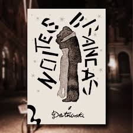

Noites Brancas
Noites Brancas é uma obra do escritor russo Fiódor Dostoiévski, publicada em 1848. A obra romântica tem como personagem central o Sonhador, um homem já desiludido e solitário que às margens do rio Nieva conhece uma jovem moça de nome Nástienka. Eles se conhecem e se aproximam-o Sonhador se compadece pela história de vida da moça e desenvolve sentimentos ao longo do enredo, fazendo juras de amor e solenidade. Ao final do conto, o amado de Nástienka retorna e ela deixa o pobre amigo-esse fato abala muito o principal que volta a sua humilde morada e se deixa levar pela melancolia da alma ao se perder alguém que nunca foi seu.
considerações da leitora:
Esse narrador é um idiota esquisito. Nástienka nada devia à ele, eles se conheciam a apenas alguns dias, nada muito intenso. A versão moderna de homens ridículos e emocionado assim é o personagem Tom de "500 Dias Com Ela", um completo imbecil e babaca. Aonde já se viu alguém ficar depressivo só porque não pode ter uma mulher que ele mal conhece. Sim, as conversas entre ambos foi bastante profunda e ele sentiu essa conexão pois ao contar sua hitória ele acha que se encontra na solidão da moça e cria essa ilusão de que já que ele só tem ela, logo ela só tem ele também. Ele se iludiu sozinho, ela só desabafou sobre seus problemas, ele projetou a falsa sensação de que ela o seduzia. Apesar de tudo um livro muito bem escrito como sempre, amo esse autor e planejo ler mais obras, provavelmente Irmãos Karamazov. Por um momento, ao final da leitura você sente compaixão pelo pobre coitado e culpa a Nástienka(só pra esclarecer, nada tenho contra o Sonhador; compartilho vários de seus pensamentos e simpatizo com sua melancolia inicial, somente esclarecendo meu ponto de vista sobre o suposto romance entre as personagens e defendendo minha garota Nástienka do hate que sofre de maus interpretadores.)
Morro dos Ventos Uivantes
Morro dos Ventos Uivantes é a única obra da escritora norte-americana Emily Brontë, publicada em 1847. A obra conta a história de Heathcliff, um orfão abandonado, que é adotado pelo prospero sr. Earnshaw. Ao decorrer da trama, vários problemas familiares de desenrolam com a morte do patriarca da família e a troca do cargo de provedor para o filho mais velho Hindley. O orfão desprezado por sua cor de pele mais escura encontra comforto em sua meia irmã Catherine; os jovens se tornam inseparáveis e o rapaz desenvolve sentimentos pela moça. No final de tantas reviravoltas e caos, o livro se encerra com a morte do principal e a tão esperada paz para Hareton Earnshaw e Cathy Linton.
considerações da leitora:
Nunca fiquei mais confusa com incesto antes. Você deve anotar em um papel antes de ler ou irá chegar na metade e se questionar quem diabos é Linton Heathcliff! juro, li pela primeira vez bem nova(acho que uns 9/11 anos) e não entendi muito mas depois fiz uma releitura e afirmo que apesar de tudo, eu adoro o Heathcliff de coração mesmo. Ele manipulou, chantageou, roubou, esnobou, humilhou, sequestrou, manteve em cárcere privado? sim. E ainda sim considero alguna motivos dele plausíveis.(não aprovo nada disso sério são crimes terriveis apenas dando uma opinião com comédia para entreter). É bastante complicado de se ler assim de primeira também, a escrita é densa então recomendo uma xícara de chá antes de pegar essa bazuca. Enfim, ótimo livro adoro a escrita, a trama, os personagens(tirando o Hindley) e a autora também, recomendo se tiver psicológico bom e bastante paciência.
O Fantasma da Ópera

O Fantasma da Ópera é uma obra de ficçao gótica do escritor francês Gaston Leroux, publicada em 1909. A obra acompanha a história de Christine Daaé, uma cantora de ópera; Raoul, o Visconde de Chagny e melhor amigo de infância de Daaé; Erik, um homem deformado que atua como fantasma no romance onde assombra os dois enamorados. Ambientado numa Ópera de Paris assombrada por um fantasma que traz desgraça e morte aos que se opoem em seu caminho; Daaé se encontra em um relacionamento de submissão com o maldito que é obcecado por sua voz. Ao final da trama, Raoul consegue libertar Christine das garras do perverso Erik com a ajuda de um velho amigo do dito cujo-O Persa. Recebeu diversas adaptações para musicais e filmes.
considerações da leitora:
Venho sair em defesa do Erik pois também simpatizo com ele. É um ser mal compreendido pela sociedade, rejeitado até pela própria mãe, tratado com crueldade e desprezo durante toda sua existência. Christine foi a primeira que demonstrou compaixão com a fera que se apaixonou então pela bela(apenas meramente irônico pois ele era obcecado por ela isso sim). O livro em si é bem raso e leve, facilmente leria em algumas horas mas gosto de degustar a leitura. Já as adaptações são consideravelmente fiéis à história(adoro de paixão o musical da Broadway). Leitura flúida, história medíocre mas ainda sim guardo carinho no coração com algumas passagens(amo o Erik); enfim, recomendo.
Drácula

Drácula é uma obra de terror gótico do escritor irlândes Bram Stocker, publicada em 1897. A trama se desenvolve a partir de um empréstimo feito pelo Conde Drácula acerca de uma propriedade na Inglaterra. O advogado Jonathan Harker viaja à Transilvânia para ajudar na aquisição do imóvel e se vé refém de um perigoso vampiro. Mina Harker, sua esposa, se preocupa com a falta de notícias do amado enquanto viaja pelo país para visitar sua amiga Lucy e isso a leva a descobrir mais sobre o desaparecimento de seu marido e a coloca em um grupo de caça-vampiros liderados por Van Helsing, um experiente no assunto. Ao final, eles matam a criatura e anos depois ainda relelmbram a aventura em uma viagem aos balcãs e decidem revelar seus manuscritos sobre. O livro é todo escrito em cartas e datilografias, trazendo o leitor para o íntimo do personagem que narra.
considerações da leitora:
Primeiramente venho julgar essa editora que coloquei aí porque comprei o livro e a diagramação das páginas é péssima, quase não há espaço para margens ou anotações!! Agora em relação ao livro eu gostaria de observar a conotação bastante sexual da obra num todo, o que para aquele período era chocante. Mas vampiros são realmente criaturas sedutoras, que instigam afeição e atração em suas vítimas. Confesso que achei chocante de início mas ainda sim muito legal, a sexualidade explorada dos personagens e as relações homoafetivas me fizeram suspeitar um pouco da fidelidade do casal principal(Mina e Jonathan). A relação entre Mina e Lucy(uma amizade bem forte e íntima) e a de Jonathan o Conde(estritamente interpessoal mas de algum jeito bastante íntima). Não sei, talvez eu só seja estranha ou homofóbica(brincadeira) mas é engraçado ainda sim. Ótimo livro, leitura fácil e simples(mas é bom estudar um pouco sobre os balcãs antes para não se perder) e amei a história. releria se tivesse tempo.
Frankenstein
Frankenstein é uma obra de terror gótico da escritora britânica Mary Shelley, publicada em 1818. A história gira entorno de um criador e sua criação, uma trama que pode ser também relacionada com a relação de Mary com seu pai durante sua infãncia. Viktor Frankenstein, um cientista ambicioso que só pensa em ser reconhecido e decide criar vida para ser vangloriado em um acesso de complecxo de Deus; porém ao finalmente encarar a criatura viva em sua frente o homem desiste de tudo e passa a fugir e negar esse erro. A criatura, então rejeitada, conhece os horrorores da sociedade que o persegue e o abomina; ela então persegue seu criador e implora para que ele crie uma semelhante à sua desgraça. Viktor primeiramente aceita mas depois desiste e em um surto destrói seu segundo trabalho, o que incarna uma fúria incontrolável na besta fera que o persegue para matá-lo. Então, no final do livro, Viktor morre de hipotermia e a criatura se suicida logo após, se arrependendo de sua própria existência e ainda condenando seu maldito criador.
considerações da leitora:
Nunca poderei em vida descrever a sensação que tive lendo essa obra, talvez seja um sentimento que não se tem nome ou que mais ninguém sentiu lendo mas quero guardá-lo para mim por toda a eternidade de meus dias. Frankenstein é uma obra tão complexa que eu adoraria tanto que fosse aprofundada com mais detalhes mas já existem diversos estudos sobre a obra e como a autora conseguiu chegar nesse nível de perfeição divina. Dá pra acreditar que era tudo uma brincadeira entre ela e seus amigos em uma noite para criar histórias assustadoras?? Tipo, uma noite ela literalmente teve um sonho com a criatura e então se pôs a escrever incansavelmente sobre(Mary visualizou a criação se materializar na porta de seu quarto, a encarando com seus esbugalhados olhos amarelados). Eu chorei e ainda choro tanto durante todo o livro(sim eu sei que é uma sátira) mas a escrita me faz refletir e pensar sobre a relação do Viktor e do Adam/Adão(ele se nomeou em uma passagem assim como o primeiro humano para expressar que era o primeiro de sua espécie) toca muito minha alma. O abandono, a rejeição, o desprezo, o nojo, a aversão que o Viktor sente por sua própria criação, seu próprio filho sabe? choro muito! Especialistas afirmam que isso alude a relação que a autora tinha com seu pai durante sua infância(negligência após a morte da mãe no parto) é o que mais me entristece e me dá vontade de voltar no tempo e abraçá-la o mais forte possível. Não consigo mais comentar sobre, tô quase chorando mas é uma história incrível por favor se puder leia com sua alma aberta e receba tudo. Não, ninguém é mais culpado; nem o Viktor, nem o Adam, nem o sr. Frankenstein ou mais ninguém!! e pela última vez, FRANKENSTEIN É O CIENTISTA!!!!